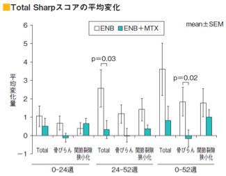
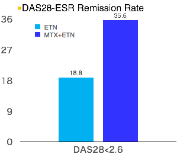

エンブレルMonoはMTX併用時に比べ関節破壊及び疾患活動性を十分に抑制できない（JESMR）
- ●MTXを3ヵ月以上投与しても疾患活動性の高いRA患者を以下の二群に無作為割り付けし、関節破壊抑制効果を検討した〔多施設共同プロスペクティブ試験（オープン試験）〕
①ENB 25mg週２回 群 ②ENB 25mg週２回＋MTX・6-8mg/週群


CONCLUSION: MTX should be continued when starting ETN in patients with active RA.
関節破壊及び疾患活動性抑制の面から考えても、エンブレルを投与を開始するときはMTX併用が推奨される。一方、アクテムラはEULAR Recommendation2016でもCombinationができない時のMonotherapyの有用性が評価されている
Kameda H, et al. J Rheumatol 38:1585-1592, 2011.